Processionarium
From the Processionarium juxta ritum Sacri Ordinis Praedicatorum (Rome, 1913, ed. Cormier). The chant is shown as printed, page by page (scan by the Church Music Association of America); the texts are given beneath in Latin and English.
The English is an AI translation from the Latin, not yet checked by a human translator.
- Ad Processionem de B. M. V. post Completorium The procession of Our Lady after Compline (Salve Regina)
- Litaniæ Lauretanæ B. M. V. The Litany of Loreto, on Saturdays
- Feria II in Rogationibus et duabus Feriis proxime subsequentibus The Rogation Days: Monday and the two days after
- Litaniæ Sanctorum The Litany of the Saints
- In Processionibus extraordinariis In processions for a particular occasion
Ad Processionem de B. M. V. post CompletoriumThe procession of Our Lady after Compline (Salve Regina) · pp. 89–95
The chant as printed · p. 89, 90
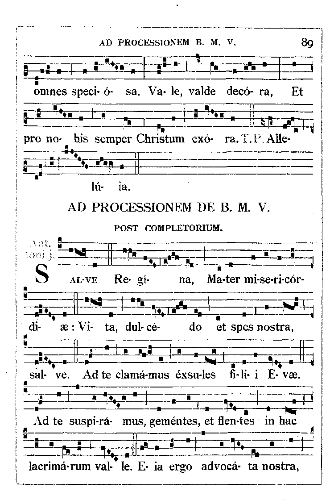
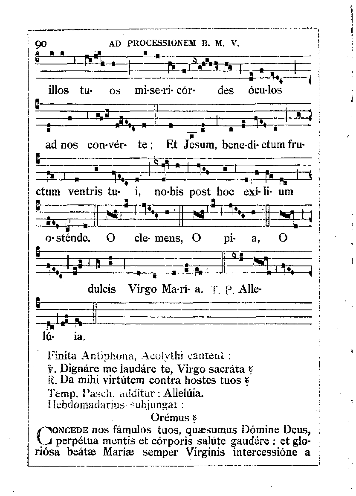
Ant. Salve, Regína, Mater misericórdiæ; vita, dulcédo, et spes nostra, salve. Ad te clamámus, éxsules fílii Evæ. Ad te suspirámus, geméntes et flentes in hac lacrimárum valle. Eja ergo, advocáta nostra, illos tuos misericórdes óculos ad nos convérte. Et Jesum, benedíctum fructum ventris tui, nobis post hoc exsílium osténde. O clemens, O pia, O dulcis Virgo María. T. P. Allelúia.
Ant. Hail, holy Queen, Mother of mercy, our life, our sweetness and our hope. To thee do we cry, poor banished children of Eve; to thee do we send up our sighs, mourning and weeping in this valley of tears. Turn then, most gracious advocate, thine eyes of mercy towards us; and after this our exile show unto us the blessed fruit of thy womb, Jesus. O clement, O loving, O sweet Virgin Mary. In Paschaltide: Alleluia.
Finíta Antíphona, Acólythi cantent:
When the antiphon is finished, the acolytes sing:
℣. Dignáre me laudáre te, Virgo sacráta. ℟. Da mihi virtútem contra hostes tuos. (T. P. Allelúia.)
℣. Make me worthy to praise thee, O sacred Virgin. ℟. Give me strength against thine enemies. (In Paschaltide: Alleluia.)
Hebdomadárius subjúngat:
The hebdomadary adds:
Orémus. Concéde nos fámulos tuos, quǽsumus, Dómine Deus, perpétua mentis et córporis salúte gaudére: et gloriósa beátæ Maríæ semper Vírginis intercessióne, a præsénti liberári tristítia, et ætérna pérfrui lætítia. Per Christum Dóminum nostrum. ℟. Amen.
Let us pray. Grant, we beseech Thee, O Lord God, that we Thy servants may enjoy lasting health of mind and body, and by the glorious intercession of blessed Mary ever Virgin be delivered from present sorrow and enjoy eternal gladness. Through Christ our Lord. ℟. Amen.
Deínde Ceroferárii, vel Cantóres, incípiant Antíphonam O lumen, ut supra, pag. 76, et Fratres processionáliter revertántur in Chorum. Qua finíta, Ceroferárii dicant:
Then the candle-bearers or the cantors begin the antiphon O lumen, as above, p. 76, and the friars return in procession to the choir. When it is finished, the candle-bearers say:
The chant as printed · p. 76
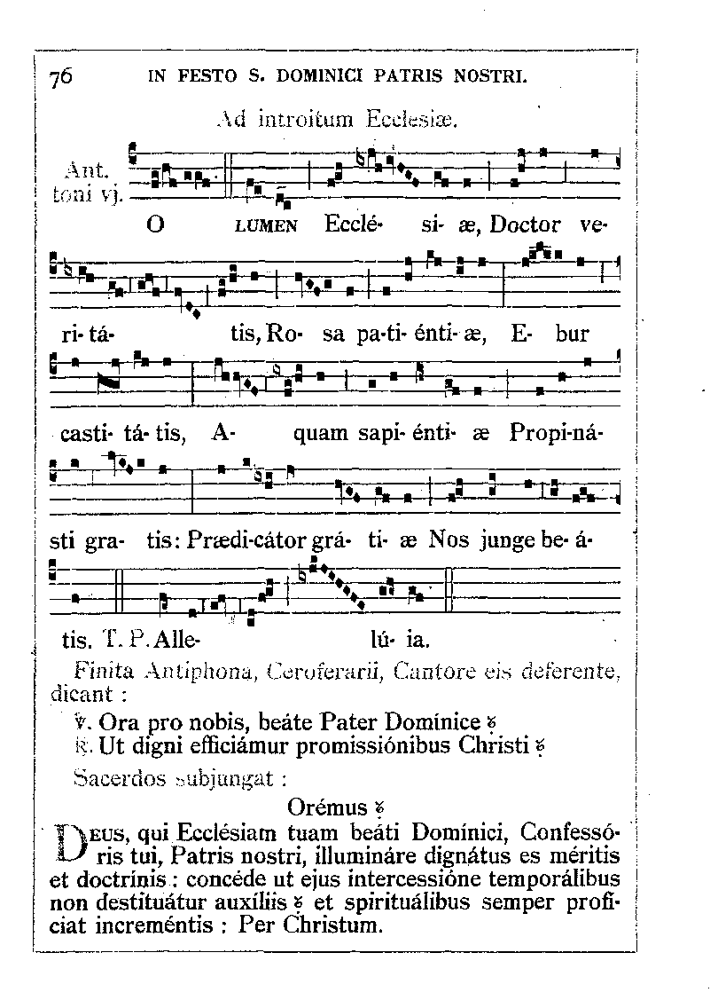
℣. Ora pro nobis, beáte Pater Domínice. ℟. Ut digni efficiámur promissiónibus Christi. (T. P. Allelúia.) Orémus. Concéde, quǽsumus, omnípotens Deus: ut qui peccatórum nostrórum póndere prémimur, beáti Domínici Confessóris tui, Patris nostri, patrocínio sublevémur. Per Christum Dóminum nostrum. ℟. Amen.
℣. Pray for us, blessed Father Dominic. ℟. That we may be made worthy of the promises of Christ. (In Paschaltide: Alleluia.) Let us pray. Grant, we beseech Thee, almighty God, that we who are weighed down by the burden of our sins may be raised up by the patronage of blessed Dominic, Thy Confessor, our Father. Through Christ our Lord. ℟. Amen.
Si consuetúdo Convéntus vel Provínciæ sit, ut loco Antíphonæ O lumen cantétur Antíphona de áliquo Sancto Órdinis, vel álio Sancto, talis consuetúdo servári póterit; et tunc Versículus et Orátio erunt páriter de illo cujus Antíphona cantáta fúerit.
If it is the custom of the convent or province to sing, instead of the antiphon O lumen, an antiphon of some saint of the Order or of another saint, the custom may be kept; the versicle and prayer are then likewise of the saint whose antiphon was sung.
Litaniæ Lauretanæ B. M. V.The Litany of Loreto, on Saturdays · pp. 91–95
Omni Sábbato, finíta post Antíphonam Salve Regína Oratióne Concéde nos, a duóbus Frátribus et Convéntu alternátim cantentur Litaníæ beátæ Maríæ V. tono sequénti, vel álio pro consuetúdine locórum.
Every Saturday, when the prayer Concede nos after the antiphon Salve Regina is finished, the Litany of the Blessed Virgin Mary is sung alternately by two friars and the community, in the following tone or in another according to the custom of the place.
The chant as printed · p. 91, 92, 93, 94
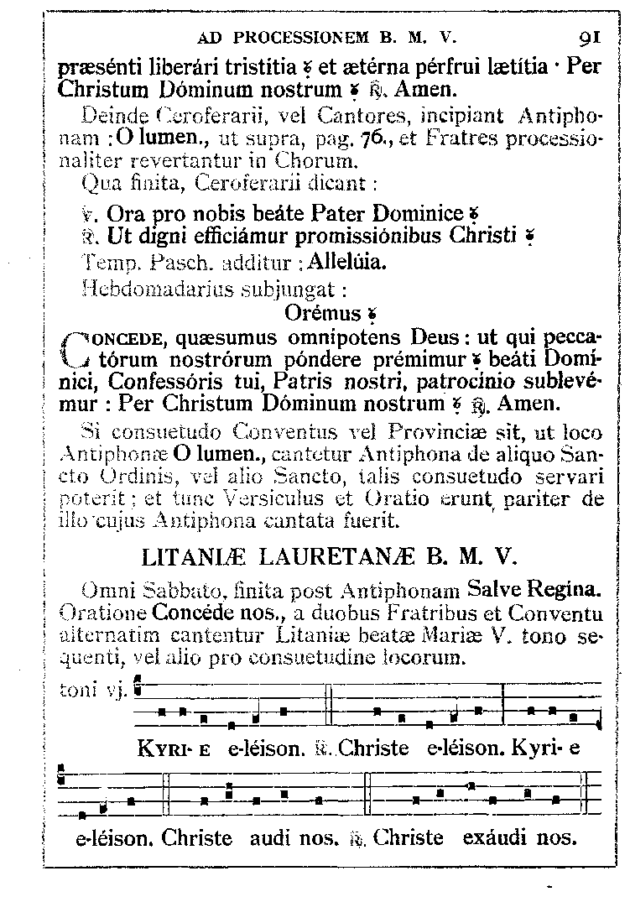
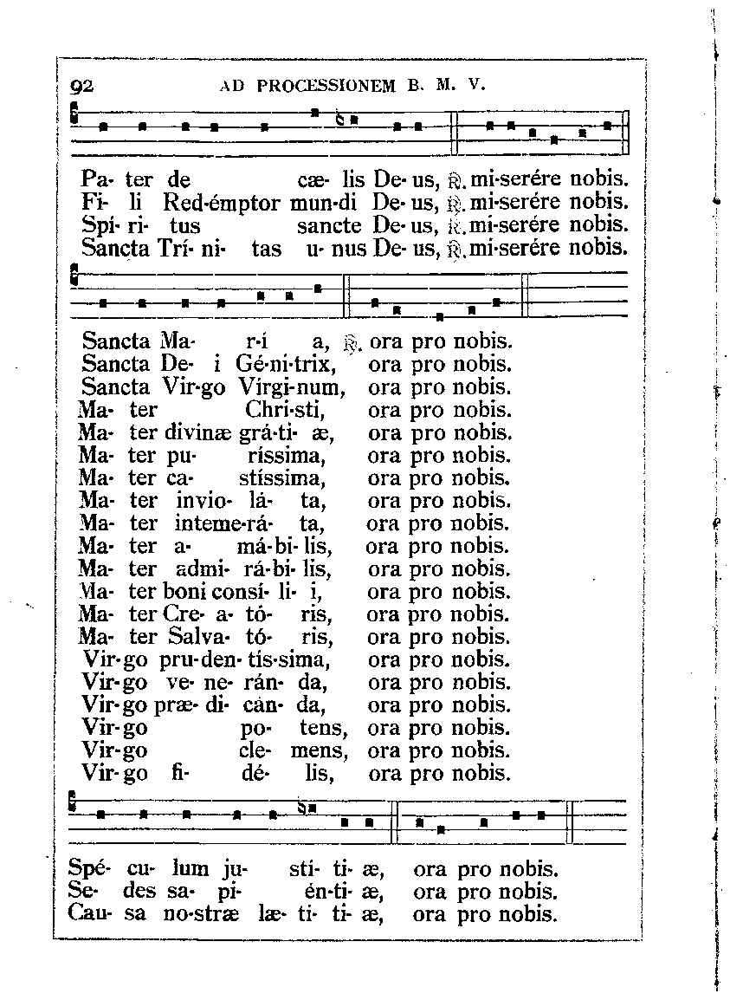
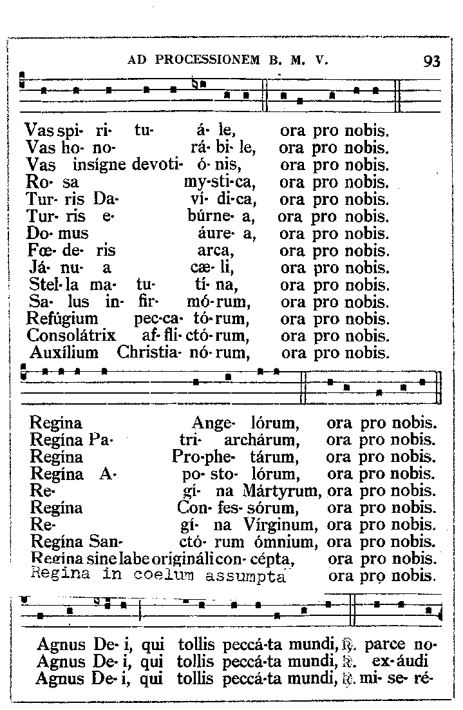
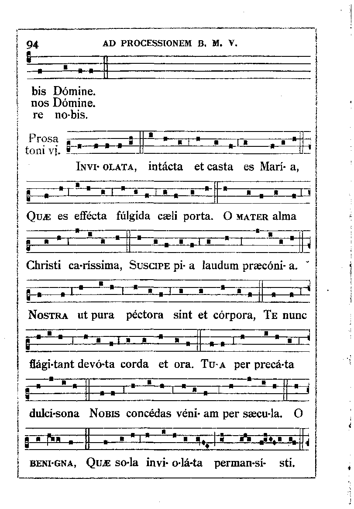
Kýrie, eléison. Christe, eléison.
Lord, have mercy. Christ, have mercy.
Kýrie, eléison.
Lord, have mercy.
Christe, audi nos. Christe, exáudi nos.
Christ, hear us. Christ, graciously hear us.
Pater de cælis, Deus, miserére nobis.
God the Father of heaven, have mercy on us.
Fili, Redémptor mundi, Deus, miserére nobis.
God the Son, Redeemer of the world, have mercy on us.
Spíritus Sancte, Deus, miserére nobis.
God the Holy Ghost, have mercy on us.
Sancta Trínitas, unus Deus, miserére nobis.
Holy Trinity, one God, have mercy on us.
Sancta María, ora pro nobis.
Holy Mary, pray for us.
Sancta Dei Génitrix, ora pro nobis.
Holy Mother of God, pray for us.
Sancta Virgo vírginum, ora pro nobis.
Holy Virgin of virgins, pray for us.
Mater Christi, ora pro nobis.
Mother of Christ, pray for us.
Mater divínæ grátiæ, ora pro nobis.
Mother of divine grace, pray for us.
Mater puríssima, ora pro nobis.
Mother most pure, pray for us.
Mater castíssima, ora pro nobis.
Mother most chaste, pray for us.
Mater invioláta, ora pro nobis.
Mother inviolate, pray for us.
Mater intemeráta, ora pro nobis.
Mother undefiled, pray for us.
Mater amábilis, ora pro nobis.
Mother most amiable, pray for us.
Mater admirábilis, ora pro nobis.
Mother most admirable, pray for us.
Mater boni consílii, ora pro nobis.
Mother of good counsel, pray for us.
Mater Creatóris, ora pro nobis.
Mother of our Creator, pray for us.
Mater Salvatóris, ora pro nobis.
Mother of our Saviour, pray for us.
Virgo prudentíssima, ora pro nobis.
Virgin most prudent, pray for us.
Virgo veneránda, ora pro nobis.
Virgin most venerable, pray for us.
Virgo prædicánda, ora pro nobis.
Virgin most renowned, pray for us.
Virgo potens, ora pro nobis.
Virgin most powerful, pray for us.
Virgo clemens, ora pro nobis.
Virgin most merciful, pray for us.
Virgo fidélis, ora pro nobis.
Virgin most faithful, pray for us.
Spéculum justítiæ, ora pro nobis.
Mirror of justice, pray for us.
Sedes sapiéntiæ, ora pro nobis.
Seat of wisdom, pray for us.
Causa nostræ lætítiæ, ora pro nobis.
Cause of our joy, pray for us.
Vas spirituále, ora pro nobis.
Spiritual vessel, pray for us.
Vas honorábile, ora pro nobis.
Vessel of honour, pray for us.
Vas insígne devotiónis, ora pro nobis.
Singular vessel of devotion, pray for us.
Rosa mýstica, ora pro nobis.
Mystical rose, pray for us.
Turris Davídica, ora pro nobis.
Tower of David, pray for us.
Turris ebúrnea, ora pro nobis.
Tower of ivory, pray for us.
Domus áurea, ora pro nobis.
House of gold, pray for us.
Fœderis arca, ora pro nobis.
Ark of the covenant, pray for us.
Jánua cæli, ora pro nobis.
Gate of heaven, pray for us.
Stella matutína, ora pro nobis.
Morning star, pray for us.
Salus infirmórum, ora pro nobis.
Health of the sick, pray for us.
Refúgium peccatórum, ora pro nobis.
Refuge of sinners, pray for us.
Consolátrix afflictórum, ora pro nobis.
Comforter of the afflicted, pray for us.
Auxílium Christianórum, ora pro nobis.
Help of Christians, pray for us.
Regína Angelórum, ora pro nobis.
Queen of Angels, pray for us.
Regína Patriarchárum, ora pro nobis.
Queen of Patriarchs, pray for us.
Regína Prophetárum, ora pro nobis.
Queen of Prophets, pray for us.
Regína Apostolórum, ora pro nobis.
Queen of Apostles, pray for us.
Regína Mártyrum, ora pro nobis.
Queen of Martyrs, pray for us.
Regína Confessórum, ora pro nobis.
Queen of Confessors, pray for us.
Regína Vírginum, ora pro nobis.
Queen of Virgins, pray for us.
Regína Sanctórum ómnium, ora pro nobis.
Queen of all Saints, pray for us.
Regína sine labe originali concépta, ora pro nobis.
Queen conceived without original sin, pray for us.
Typed into the scanned copy (added to the Litany in 1950):
Typed into the scanned copy (added to the Litany in 1950):
Regína in cælum assúmpta, ora pro nobis.
Queen assumed into heaven, pray for us.
Agnus Dei, qui tollis peccáta mundi, parce nobis, Dómine.
Lamb of God, who takest away the sins of the world, spare us, O Lord.
Agnus Dei, qui tollis peccáta mundi, exáudi nos, Dómine.
Lamb of God, who takest away the sins of the world, graciously hear us, O Lord.
Agnus Dei, qui tollis peccáta mundi, miserére nobis.
Lamb of God, who takest away the sins of the world, have mercy on us.
Deínde Prosa:
Then the Prose:
Invioláta, intácta et casta es, María, quæ es effécta fúlgida cæli porta. O Mater alma Christi caríssima, súscipe pia laudum præcónia. Nostra ut pura péctora sint et córpora, te nunc flágitant devóta corda et ora. Tua per precáta dulcísona nobis concédas véniam per sǽcula. O benígna, quæ sola invioláta permansísti. T. P. Allelúia.
Inviolate, spotless and pure art thou, O Mary, who wast made the shining gate of heaven. O loving Mother, most dear to Christ, receive our devout songs of praise. That our hearts and bodies may be pure, our devoted hearts and lips now implore thee. By thy sweet-sounding prayers grant us pardon for ever. O kind one, who alone hast remained inviolate. In Paschaltide: Alleluia.
The chant as printed · p. 95
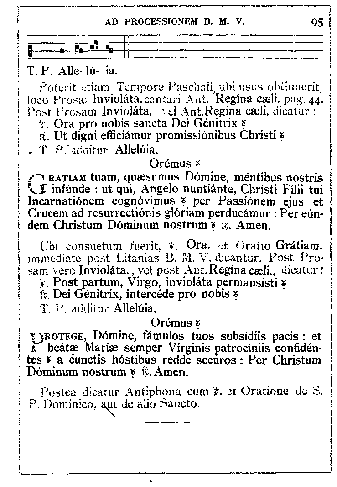
Póterit étiam, Témpore Pascháli, ubi usus obtinúerit, loco Prosæ Invioláta cantári Ant. Regína cæli, pag. 44. Post Prosam Invioláta vel Ant. Regína cæli dicátur:
In Paschaltide, where it is the custom, the antiphon Regina caeli (p. 44) may be sung instead of the Prose Inviolata. After the Prose Inviolata or the antiphon Regina caeli is said:
℣. Ora pro nobis, sancta Dei Génitrix. ℟. Ut digni efficiámur promissiónibus Christi. (T. P. Allelúia.) Orémus. Grátiam tuam, quǽsumus, Dómine, méntibus nostris infúnde: ut qui, Angelo nuntiánte, Christi Fílii tui Incarnatiónem cognóvimus, per Passiónem ejus et Crucem ad resurrectiónis glóriam perducámur. Per eúndem Christum Dóminum nostrum. ℟. Amen.
℣. Pray for us, O holy Mother of God. ℟. That we may be made worthy of the promises of Christ. (In Paschaltide: Alleluia.) Let us pray. Pour forth, we beseech Thee, O Lord, Thy grace into our hearts; that we, to whom the Incarnation of Christ Thy Son was made known by the message of an Angel, may by His Passion and Cross be brought to the glory of His Resurrection. Through the same Christ our Lord. ℟. Amen.
Ubi consuétum fúerit, ℣. Ora et Orátio Grátiam immediáte post Litanías B. M. V. dicántur. Post Prosam vero Invioláta, vel post Ant. Regína cæli, dicátur:
Where it is the custom, the versicle Ora and the prayer Gratiam are said immediately after the Litany of Our Lady; and after the Prose Inviolata, or after the antiphon Regina caeli, is said:
℣. Post partum, Virgo, invioláta permansísti. ℟. Dei Génitrix, intercéde pro nobis. (T. P. Allelúia.) Orémus. Prótege, Dómine, fámulos tuos subsídiis pacis: et beátæ Maríæ semper Vírginis patrocíniis confidéntes, a cunctis hóstibus redde secúros. Per Christum Dóminum nostrum. ℟. Amen.
℣. After childbirth, O Virgin, thou didst remain inviolate. ℟. Mother of God, intercede for us. (In Paschaltide: Alleluia.) Let us pray. Protect, O Lord, Thy servants with the help of peace; and make them, trusting in the patronage of blessed Mary ever Virgin, safe from all enemies. Through Christ our Lord. ℟. Amen.
Póstea dicátur Antíphona cum ℣. et Oratióne de S. P. Domínico, aut de álio Sancto.
Then the antiphon, with the versicle and prayer, of our holy Father Dominic or of another saint is said.
Feria II in Rogationibus et duabus Feriis proxime subsequentibusThe Rogation Days: Monday and the two days after · pp. 124–126
Quando Missa cantanda fuerit, Sacerdos et Ministri induant se sacris véstibus sicut in ferialibus diébus. Et præcedentibus Acolytho sine céreo, et Subdiácono et Diácono deferénte Missále, subsequatur Sacerdos sine Casula. Deinde, finita Hora præcedente Missam, véniant ante gradus Presbytérii, et stent sicut in Domínicis diébus ad Aspersiónem Aquæ benedíctæ. Cantor autem incípiat Antíphonam Exsúrge.
When the Mass is to be sung, the priest and ministers vest as on ferial days. The acolyte goes first without a candle, then the subdeacon and the deacon carrying the Missal, and the priest follows without the chasuble. When the Hour before Mass is finished they come before the steps of the presbytery and stand as on Sundays at the sprinkling of holy water. The cantor begins the antiphon Exsurge.
Si autem faciénda fúerit Procéssio, induat Sacerdos cappam séricam et duo Ceroferárii candélas accénsas déferant. Cum cantátur Antíphona, qui delatúri sunt Crucem et aquam benedíctam, accípiant quæ ad eos pértinent.
If there is to be a procession, the priest puts on a silk cope and two candle-bearers carry lighted candles. While the antiphon is sung, those who are to carry the cross and the holy water take what belongs to them.
The chant as printed · p. 124, 125
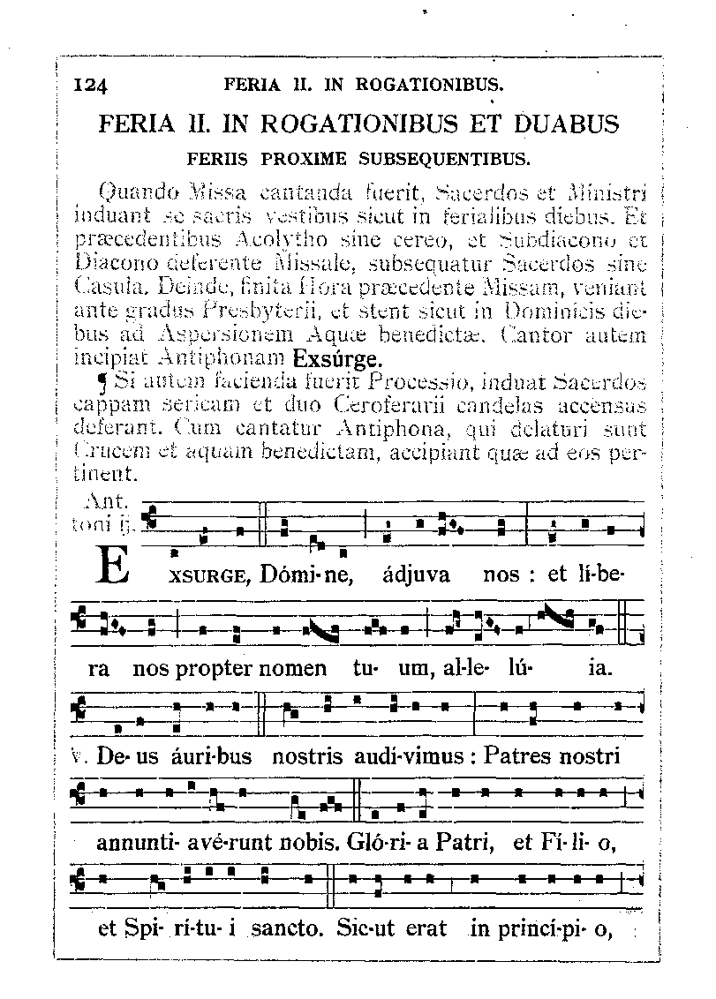
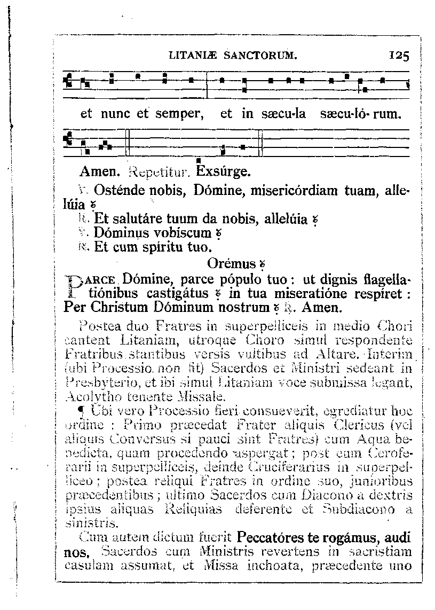
Ant. Exsúrge, Dómine, ádjuva nos: et líbera nos propter nomen tuum, allelúia. ℣. Deus, áuribus nostris audívimus: patres nostri annuntiavérunt nobis. Glória Patri. Sicut erat. Repetitur Exsúrge.
Ant. Arise, O Lord, help us, and deliver us for Thy name’s sake, alleluia. ℣. We have heard, O God, with our ears: our fathers have declared to us. Glory be. As it was. Arise is repeated.
℣. Osténde nobis, Dómine, misericórdiam tuam, allelúia. ℟. Et salutáre tuum da nobis, allelúia. ℣. Dóminus vobíscum. ℟. Et cum spíritu tuo. Orémus. Parce, Dómine, parce pópulo tuo: ut dignis flagellatiónibus castigátus, in tua miseratióne respíret: Per Christum Dóminum nostrum. ℟. Amen.
℣. Show us, O Lord, Thy mercy, alleluia. ℟. And grant us Thy salvation, alleluia. ℣. The Lord be with you. ℟. And with thy spirit. Let us pray. Spare, O Lord, spare Thy people; that, chastised by deserved scourges, they may breathe again in Thy mercy. Through Christ our Lord. ℟. Amen.
Póstea duo Fratres in superpellíceis in médio Chori cantent Litaníam, utróque Choro simul respondénte, Frátribus stántibus versis vúltibus ad Altáre. Intérim (ubi Procéssio non fit) Sacerdos et Minístri sédeant in Presbytério, et ibi simul Litaníam voce submíssa legant, Acolytho tenénte Missále.
Then two friars in surplices sing the Litany in the middle of the choir, both sides of the choir answering together, the friars standing turned towards the altar. Meanwhile (where there is no procession) the priest and ministers sit in the presbytery and read the Litany there together in a low voice, the acolyte holding the Missal.
Ubi vero Procéssio fíeri consuevérit, egrediátur hoc órdine: Primo præcédat Frater áliquis Clericus (vel áliquis Convérsus si pauci sint Fratres) cum Aqua benedícta, quam procedéndo aspérgat; post eum Ceroferárii in superpellíceis, deínde Cruciferárius in superpellíceo; póstea réliqui Fratres in órdine suo, junióribus præcedéntibus; último Sacerdos cum Diácono a dextris ipsíus áliquas Relíquias deferénte, et Subdiácono a sinístris.
Where it is the custom to have the procession, it goes out in this order: first a clerical friar (or a lay brother if the friars are few) with holy water, sprinkling as he goes; after him the candle-bearers in surplices, then the cross-bearer in a surplice; then the other friars in their order, the younger first; last the priest, with the deacon on his right carrying some relics, and the subdeacon on his left.
Cum autem dictum fúerit Peccatóres te rogámus, audi nos, Sacerdos cum Minístris revértens in sacrístiam casulam assúmat, et Missa inchoáta, præcedénte uno Ceroferário et Diácono et Subdiácono more sólito, véniat ad Altáre.
When "We sinners, we beseech Thee, hear us" has been sung, the priest returns with the ministers to the sacristy and puts on the chasuble; and when the Mass has begun, with one candle-bearer, the deacon and the subdeacon going before him in the usual way, he comes to the altar.
Litaniæ SanctorumThe Litany of the Saints · pp. 126–130
The chant as printed · p. 126, 127, 128, 129, 130
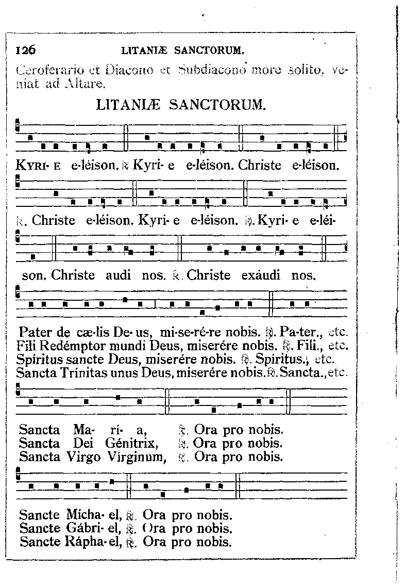
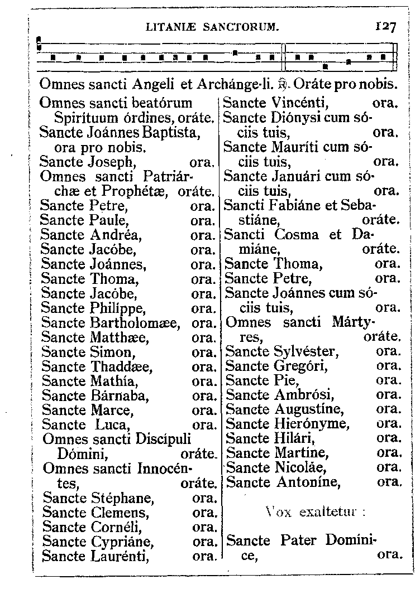
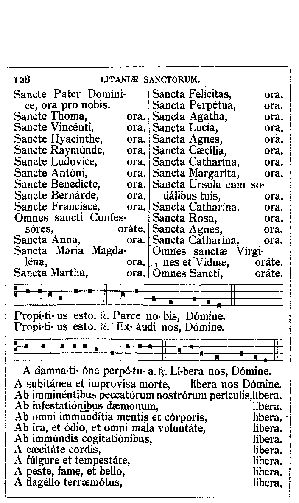
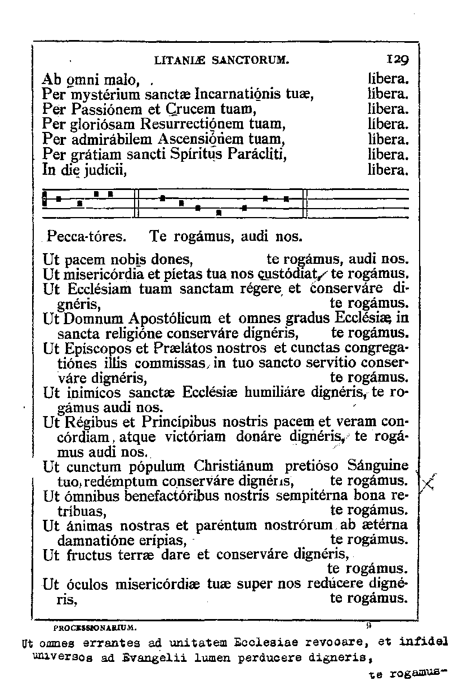
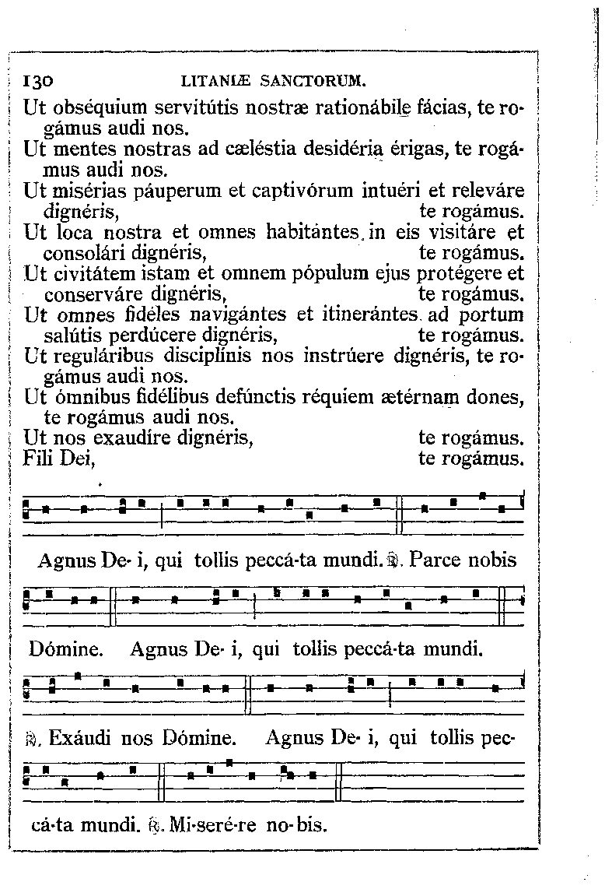
Kýrie, eléison. Kýrie, eléison.
Lord, have mercy. Lord, have mercy.
Christe, eléison. Christe, eléison.
Christ, have mercy. Christ, have mercy.
Kýrie, eléison. Kýrie, eléison.
Lord, have mercy. Lord, have mercy.
Christe, audi nos. Christe, exáudi nos.
Christ, hear us. Christ, graciously hear us.
Pater de cælis, Deus, miserére nobis.
God the Father of heaven, have mercy on us.
Fili, Redémptor mundi, Deus, miserére nobis.
God the Son, Redeemer of the world, have mercy on us.
Spíritus Sancte, Deus, miserére nobis.
God the Holy Ghost, have mercy on us.
Sancta Trínitas, unus Deus, miserére nobis.
Holy Trinity, one God, have mercy on us.
Sancta María, ora pro nobis.
Holy Mary, pray for us.
Sancta Dei Génitrix, ora pro nobis.
Holy Mother of God, pray for us.
Sancta Virgo vírginum, ora pro nobis.
Holy Virgin of virgins, pray for us.
Sancte Míchaël, ora pro nobis.
St Michael, pray for us.
Sancte Gábriel, ora pro nobis.
St Gabriel, pray for us.
Sancte Ráphaël, ora pro nobis.
St Raphael, pray for us.
Omnes sancti Ángeli et Archángeli, oráte pro nobis.
All ye holy Angels and Archangels, pray for us.
Omnes sancti beatórum Spirítuum órdines, oráte pro nobis.
All ye holy orders of blessed Spirits, pray for us.
Sancte Joánnes Baptísta, ora pro nobis.
St John the Baptist, pray for us.
Sancte Joseph, ora pro nobis.
St Joseph, pray for us.
Omnes sancti Patriárchæ et Prophétæ, oráte pro nobis.
All ye holy Patriarchs and Prophets, pray for us.
Sancte Petre, ora pro nobis.
St Peter, pray for us.
Sancte Paule, ora pro nobis.
St Paul, pray for us.
Sancte Andréa, ora pro nobis.
St Andrew, pray for us.
Sancte Jacóbe, ora pro nobis.
St James, pray for us.
Sancte Joánnes, ora pro nobis.
St John, pray for us.
Sancte Thoma, ora pro nobis.
St Thomas, pray for us.
Sancte Jacóbe, ora pro nobis.
St James, pray for us.
Sancte Philíppe, ora pro nobis.
St Philip, pray for us.
Sancte Bartholomǽe, ora pro nobis.
St Bartholomew, pray for us.
Sancte Matthǽe, ora pro nobis.
St Matthew, pray for us.
Sancte Simon, ora pro nobis.
St Simon, pray for us.
Sancte Thaddǽe, ora pro nobis.
St Thaddeus, pray for us.
Sancte Mathía, ora pro nobis.
St Matthias, pray for us.
Sancte Bárnaba, ora pro nobis.
St Barnabas, pray for us.
Sancte Marce, ora pro nobis.
St Mark, pray for us.
Sancte Luca, ora pro nobis.
St Luke, pray for us.
Omnes sancti Discípuli Dómini, oráte pro nobis.
All ye holy Disciples of the Lord, pray for us.
Omnes sancti Innocéntes, oráte pro nobis.
All ye holy Innocents, pray for us.
Sancte Stéphane, ora pro nobis.
St Stephen, pray for us.
Sancte Clemens, ora pro nobis.
St Clement, pray for us.
Sancte Cornéli, ora pro nobis.
St Cornelius, pray for us.
Sancte Cypriáne, ora pro nobis.
St Cyprian, pray for us.
Sancte Laurénti, ora pro nobis.
St Lawrence, pray for us.
Sancte Vincénti, ora pro nobis.
St Vincent, pray for us.
Sancte Diónysi cum sóciis tuis, ora pro nobis.
St Denis, with thy companions, pray for us.
Sancte Mauríti cum sóciis tuis, ora pro nobis.
St Maurice, with thy companions, pray for us.
Sancte Januári cum sóciis tuis, ora pro nobis.
St Januarius, with thy companions, pray for us.
Sancti Fabiáne et Sebastiáne, oráte pro nobis.
Sts Fabian and Sebastian, pray for us.
Sancti Cosma et Damiáne, oráte pro nobis.
Sts Cosmas and Damian, pray for us.
Sancte Thoma, ora pro nobis.
St Thomas, pray for us.
Sancte Petre, ora pro nobis.
St Peter, pray for us.
Sancte Joánnes cum sóciis tuis, ora pro nobis.
St John, with thy companions, pray for us.
Omnes sancti Mártyres, oráte pro nobis.
All ye holy Martyrs, pray for us.
Sancte Sylvéster, ora pro nobis.
St Sylvester, pray for us.
Sancte Gregóri, ora pro nobis.
St Gregory, pray for us.
Sancte Pie, ora pro nobis.
St Pius, pray for us.
Sancte Ambrósi, ora pro nobis.
St Ambrose, pray for us.
Sancte Augustíne, ora pro nobis.
St Augustine, pray for us.
Sancte Hierónyme, ora pro nobis.
St Jerome, pray for us.
Sancte Hilári, ora pro nobis.
St Hilary, pray for us.
Sancte Martíne, ora pro nobis.
St Martin, pray for us.
Sancte Nicoláe, ora pro nobis.
St Nicholas, pray for us.
Sancte Antoníne, ora pro nobis.
St Antoninus, pray for us.
Vox exaltétur:
The voice is raised:
Sancte Pater Domínice, ora pro nobis.
Holy Father Dominic, pray for us.
Sancte Pater Domínice, ora pro nobis.
Holy Father Dominic, pray for us.
Sancte Thoma, ora pro nobis.
St Thomas, pray for us.
Sancte Vincénti, ora pro nobis.
St Vincent, pray for us.
Sancte Hyacínthe, ora pro nobis.
St Hyacinth, pray for us.
Sancte Raymúnde, ora pro nobis.
St Raymond, pray for us.
Sancte Ludovíce, ora pro nobis.
St Louis, pray for us.
Sancte Antóni, ora pro nobis.
St Anthony, pray for us.
Sancte Benedícte, ora pro nobis.
St Benedict, pray for us.
Sancte Bernárde, ora pro nobis.
St Bernard, pray for us.
Sancte Francísce, ora pro nobis.
St Francis, pray for us.
Omnes sancti Confessóres, oráte pro nobis.
All ye holy Confessors, pray for us.
Sancta Anna, ora pro nobis.
St Anne, pray for us.
Sancta María Magdaléna, ora pro nobis.
St Mary Magdalene, pray for us.
Sancta Martha, ora pro nobis.
St Martha, pray for us.
Sancta Felícitas, ora pro nobis.
St Felicity, pray for us.
Sancta Perpétua, ora pro nobis.
St Perpetua, pray for us.
Sancta Ágatha, ora pro nobis.
St Agatha, pray for us.
Sancta Lúcia, ora pro nobis.
St Lucy, pray for us.
Sancta Agnes, ora pro nobis.
St Agnes, pray for us.
Sancta Cæcília, ora pro nobis.
St Cecilia, pray for us.
Sancta Catharína, ora pro nobis.
St Catherine, pray for us.
Sancta Margaríta, ora pro nobis.
St Margaret, pray for us.
Sancta Úrsula cum sodálibus tuis, ora pro nobis.
St Ursula, with thy companions, pray for us.
Sancta Catharína, ora pro nobis.
St Catherine, pray for us.
Sancta Rosa, ora pro nobis.
St Rose, pray for us.
Sancta Agnes, ora pro nobis.
St Agnes, pray for us.
Sancta Catharína, ora pro nobis.
St Catherine, pray for us.
Omnes sanctæ Vírgines et Víduæ, oráte pro nobis.
All ye holy Virgins and Widows, pray for us.
Omnes Sancti, oráte pro nobis.
All ye Saints, pray for us.
Propítius esto, parce nobis, Dómine.
Be merciful, spare us, O Lord.
Propítius esto, exáudi nos, Dómine.
Be merciful, graciously hear us, O Lord.
A damnatióne perpétua, líbera nos, Dómine.
From everlasting damnation, deliver us, O Lord.
A subitánea et improvísa morte, líbera nos, Dómine.
From sudden and unprovided death, deliver us, O Lord.
Ab imminéntibus peccatórum nostrórum perículis, líbera nos, Dómine.
From the dangers of our sins that threaten us, deliver us, O Lord.
Ab infestatiónibus dæmonum, líbera nos, Dómine.
From the assaults of the devils, deliver us, O Lord.
Ab omni immundítia mentis et córporis, líbera nos, Dómine.
From all uncleanness of mind and body, deliver us, O Lord.
Ab ira, et ódio, et omni mala voluntáte, líbera nos, Dómine.
From anger, and hatred, and all ill will, deliver us, O Lord.
Ab immúndis cogitatiónibus, líbera nos, Dómine.
From unclean thoughts, deliver us, O Lord.
A cæcitáte cordis, líbera nos, Dómine.
From blindness of heart, deliver us, O Lord.
A fúlgure et tempestáte, líbera nos, Dómine.
From lightning and tempest, deliver us, O Lord.
A peste, fame, et bello, líbera nos, Dómine.
From plague, famine and war, deliver us, O Lord.
A flagéllo terræmótus, líbera nos, Dómine.
From the scourge of earthquake, deliver us, O Lord.
Ab omni malo, líbera nos, Dómine.
From all evil, deliver us, O Lord.
Per mystérium sanctæ Incarnatiónis tuæ, líbera nos, Dómine.
Through the mystery of Thy holy Incarnation, deliver us, O Lord.
Per Passiónem et Crucem tuam, líbera nos, Dómine.
Through Thy Passion and Cross, deliver us, O Lord.
Per gloriósam Resurrectiónem tuam, líbera nos, Dómine.
Through Thy glorious Resurrection, deliver us, O Lord.
Per admirábilem Ascensiónem tuam, líbera nos, Dómine.
Through Thy wonderful Ascension, deliver us, O Lord.
Per grátiam Sancti Spíritus Parácliti, líbera nos, Dómine.
Through the grace of the Holy Ghost, the Paraclete, deliver us, O Lord.
In die judícii, líbera nos, Dómine.
In the day of judgement, deliver us, O Lord.
Peccatóres, te rogámus, audi nos.
We sinners, we beseech Thee, hear us.
Ut pacem nobis dones, te rogámus, audi nos.
That Thou wouldst give us peace, we beseech Thee, hear us.
Ut misericórdia et píetas tua nos custódiat, te rogámus, audi nos.
That Thy mercy and goodness may keep us, we beseech Thee, hear us.
Ut Ecclésiam tuam sanctam régere et conserváre dignéris, te rogámus, audi nos.
That Thou wouldst deign to rule and preserve Thy holy Church, we beseech Thee, hear us.
Ut Domnum Apostólicum et omnes gradus Ecclésiæ in sancta religióne conserváre dignéris, te rogámus, audi nos.
That Thou wouldst deign to preserve the Lord Apostolic and every rank of the Church in holy religion, we beseech Thee, hear us.
Ut Epíscopos et Prælátos nostros et cunctas congregatiónes illis commíssas in tuo sancto servítio conserváre dignéris, te rogámus, audi nos.
That Thou wouldst deign to keep our Bishops and Prelates and all the congregations committed to them in Thy holy service, we beseech Thee, hear us.
Ut inimícos sanctæ Ecclésiæ humiliáre dignéris, te rogámus, audi nos.
That Thou wouldst deign to humble the enemies of holy Church, we beseech Thee, hear us.
Ut Régibus et Princípibus nostris pacem et veram concórdiam atque victóriam donáre dignéris, te rogámus, audi nos.
That Thou wouldst deign to give our Kings and Princes peace, true concord and victory, we beseech Thee, hear us.
Ut cunctum pópulum christiánum pretióso Sánguine tuo redémptum conserváre dignéris, te rogámus, audi nos.
That Thou wouldst deign to preserve all the Christian people redeemed by Thy precious Blood, we beseech Thee, hear us.
Ut ómnibus benefactóribus nostris sempitérna bona retríbuas, te rogámus, audi nos.
That Thou wouldst repay all our benefactors with everlasting good things, we beseech Thee, hear us.
Ut ánimas nostras et paréntum nostrórum ab ætérna damnatióne erípias, te rogámus, audi nos.
That Thou wouldst snatch our souls and those of our parents from everlasting damnation, we beseech Thee, hear us.
Ut fructus terræ dare et conserváre dignéris, te rogámus, audi nos.
That Thou wouldst deign to give and preserve the fruits of the earth, we beseech Thee, hear us.
Ut óculos misericórdiæ tuæ super nos redúcere dignéris, te rogámus, audi nos.
That Thou wouldst deign to turn again upon us the eyes of Thy mercy, we beseech Thee, hear us.
Ut omnes errántes ad unitátem Ecclésiæ revocáre, et infidéles univérsos ad Evangélii lumen perdúcere dignéris, te rogámus, audi nos.
That Thou wouldst deign to call back all who stray to the unity of the Church, and lead all unbelievers to the light of the Gospel, we beseech Thee, hear us.
Ut obséquium servitútis nostræ rationábile fácias, te rogámus, audi nos.
That Thou wouldst make the service of our bondage a reasonable one, we beseech Thee, hear us.
Ut mentes nostras ad cæléstia desidéria érigas, te rogámus, audi nos.
That Thou wouldst lift up our minds to heavenly desires, we beseech Thee, hear us.
Ut misérias páuperum et captivórum intuéri et releváre dignéris, te rogámus, audi nos.
That Thou wouldst deign to look upon and relieve the miseries of the poor and of captives, we beseech Thee, hear us.
Ut loca nostra et omnes habitántes in eis visitáre et consolári dignéris, te rogámus, audi nos.
That Thou wouldst deign to visit and comfort our houses and all who dwell in them, we beseech Thee, hear us.
Ut civitátem istam et omnem pópulum ejus protégere et conserváre dignéris, te rogámus, audi nos.
That Thou wouldst deign to protect and preserve this city and all its people, we beseech Thee, hear us.
Ut omnes fidéles navigántes et itinerántes ad portum salútis perdúcere dignéris, te rogámus, audi nos.
That Thou wouldst deign to bring all the faithful who travel by sea and by land to the haven of salvation, we beseech Thee, hear us.
Ut reguláribus disciplínis nos instrúere dignéris, te rogámus, audi nos.
That Thou wouldst deign to instruct us in regular discipline, we beseech Thee, hear us.
Ut ómnibus fidélibus defúnctis réquiem ætérnam dones, te rogámus, audi nos.
That Thou wouldst give eternal rest to all the faithful departed, we beseech Thee, hear us.
Ut nos exaudíre dignéris, te rogámus, audi nos.
That Thou wouldst deign to hear us, we beseech Thee, hear us.
Fili Dei, te rogámus, audi nos.
Son of God, we beseech Thee, hear us.
Agnus Dei, qui tollis peccáta mundi, parce nobis, Dómine.
Lamb of God, who takest away the sins of the world, spare us, O Lord.
Agnus Dei, qui tollis peccáta mundi, exáudi nos, Dómine.
Lamb of God, who takest away the sins of the world, graciously hear us, O Lord.
Agnus Dei, qui tollis peccáta mundi, miserére nobis.
Lamb of God, who takest away the sins of the world, have mercy on us.
In Processionibus extraordinariisIn processions for a particular occasion · pp. 131
Cum oportébit fácere áliquam Processiónem in claustro vel extra pro áliquo casu emergénte, ut est turbátio áëris, perículum guerrárum, tribulátio Ecclésiæ, status Terræ sanctæ, infírmitas Príncipis, recéptio Reliquiárum, reveréntia Papæ vel alicújus Magni cui occúrritur vel cum Processióne dedúcitur, occásio Capítuli generális vel provinciális, excelléntia defúncti et hujúsmodi: legátur et cantétur et fiant Statiónes secúndum ordinatiónem Prióris cum consílio discretórum, prout cómpetit matériæ cujus occasióne fit Procéssio, et visum fúerit ad ædificatiónem intuéntium expedíre.
When a procession is to be made in the cloister or outside for some occurrence, such as a disturbance of the weather, the danger of war, a trial of the Church, the state of the Holy Land, the illness of the Prince, the reception of relics, the honour of the Pope or of some great person who is met or escorted in procession, a General or Provincial Chapter, the eminence of one who has died, and the like, what is read and sung and the stations made are as the Prior orders with the advice of the discreets, as befits the matter of the procession and seems useful for the edification of those who see it.
Si cantándæ fúerint Litaníæ, cantentur ut pp. 126-130, quibus finítis dicátur: Kýrie, eléison. Christe, eléison. Kýrie, eléison. Póstea ille qui indútus est Cappa sérica dicat: Pater noster. Et póstea subjúngat:
If the Litany is to be sung, it is sung as on pp. 126-130; after it is said: Lord, have mercy. Christ, have mercy. Lord, have mercy. Then he who wears the silk cope says: Our Father. And then he adds:
The chant as printed · p. 131
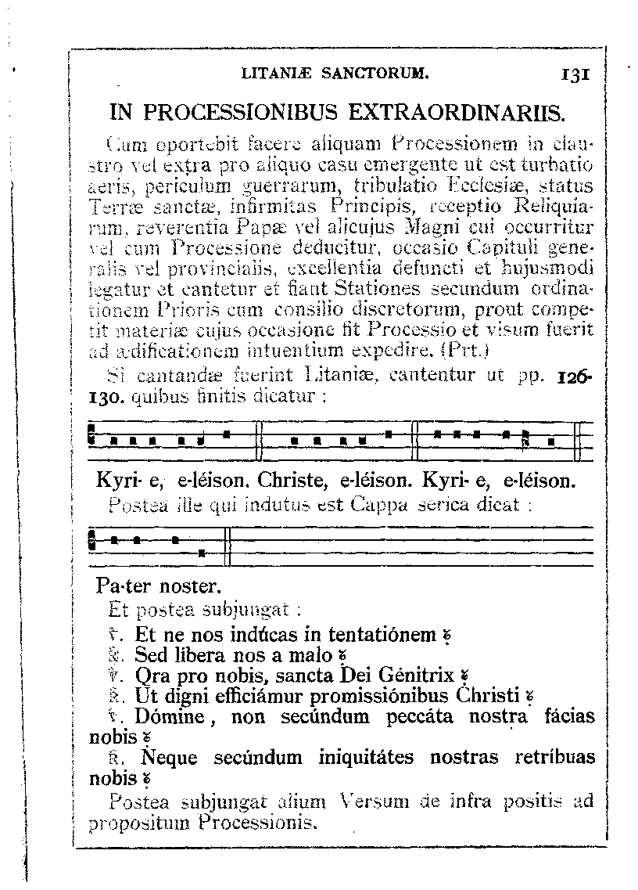
℣. Et ne nos indúcas in tentatiónem. ℟. Sed líbera nos a malo. ℣. Ora pro nobis, sancta Dei Génitrix. ℟. Ut digni efficiámur promissiónibus Christi. ℣. Dómine, non secúndum peccáta nostra fácias nobis. ℟. Neque secúndum iniquitátes nostras retríbuas nobis.
℣. And lead us not into temptation. ℟. But deliver us from evil. ℣. Pray for us, O holy Mother of God. ℟. That we may be made worthy of the promises of Christ. ℣. O Lord, deal not with us according to our sins. ℟. Nor reward us according to our iniquities.
Póstea subjúngat álium Versum de infra pósitis ad propósitum Processiónis.
Then he adds another versicle, from those given below, suited to the purpose of the procession.